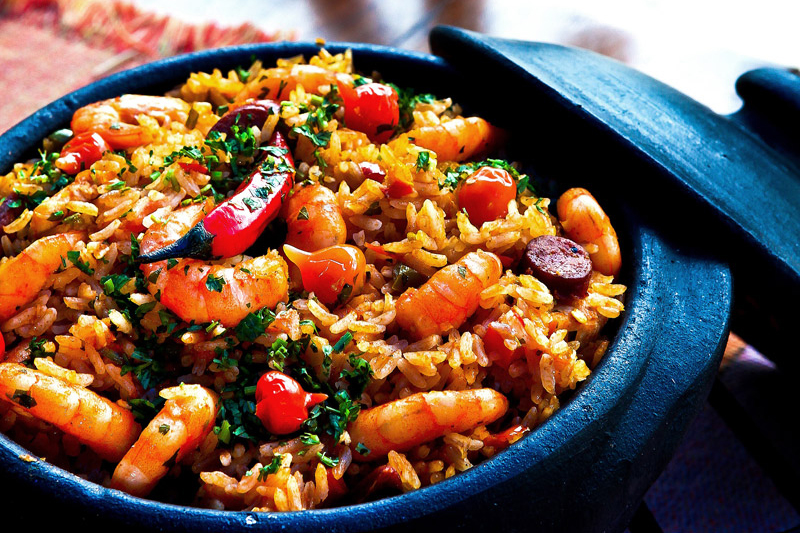
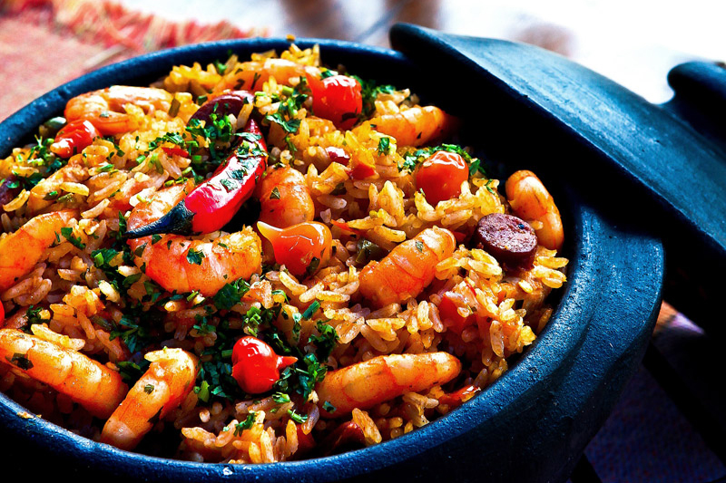

A Cozinharia
Ambiente tranquilo, música ao vivo
A cozinharia conta com um ambiente amigável, repleto de muitas árvores nativas e música brasileira ao vivo cras mattis consectetur purus sit amet fermentum. Sed posuere consectetur est at lobortis.
Horários músicais:
Terça a quinta-feira - das 18h às 22h
Sexta e sábado - das 11h às 02h
Domingo - das 11h às 22h
Playground para a criançada
Temos parquinho rodeado de árvores para que as crianças se divirtam em contato com a natureza!! Sed posuere consectetur est at lobortis. Cras justo odio, dapibus ac facilisis in, egestas eget quam. Sed posuere consectetur est at lobortis. Maecenas faucibus mollis interdum. Nulla vitae elit libero, a pharetra augue. Sed posuere consectetur est at lobortis. Maecenas faucibus mollis interdum. Nulla vitae elit libero, a pharetra augue.
Horta orgânica
Todos os pratos são feitos com legumes e vegetais produzidos em nossa horta orgânica! Sed posuere consectetur est at lobortis. Cras justo odio, dapibus ac facilisis in, egestas eget quam. Sed posuere consectetur est at lobortis. Maecenas faucibus mollis. Cras justo odio, dapibus ac facilisis in, egestas eget quam.


 
